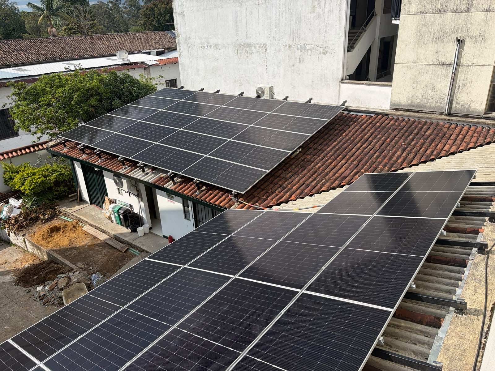
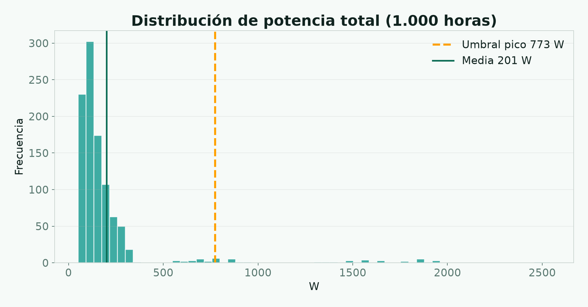
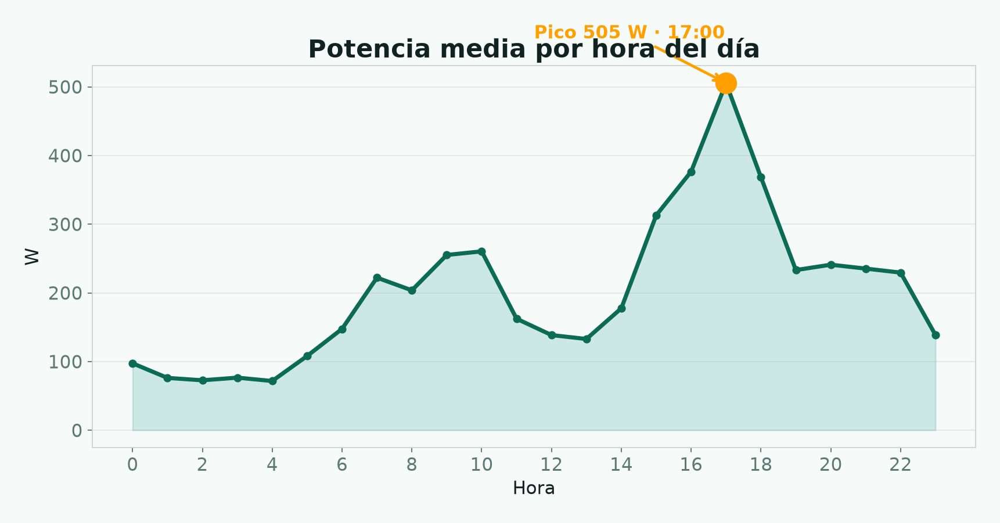
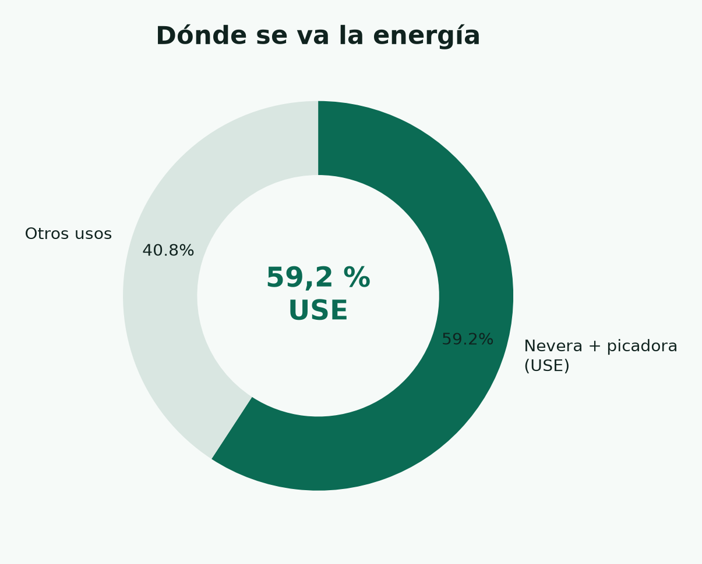
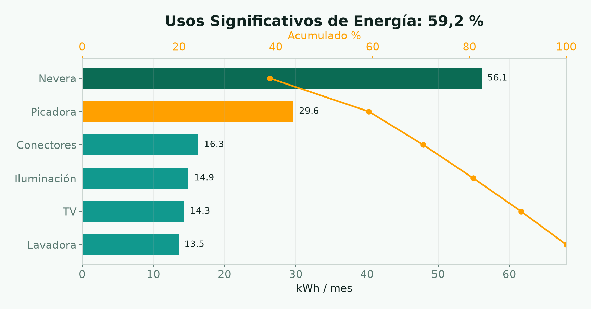
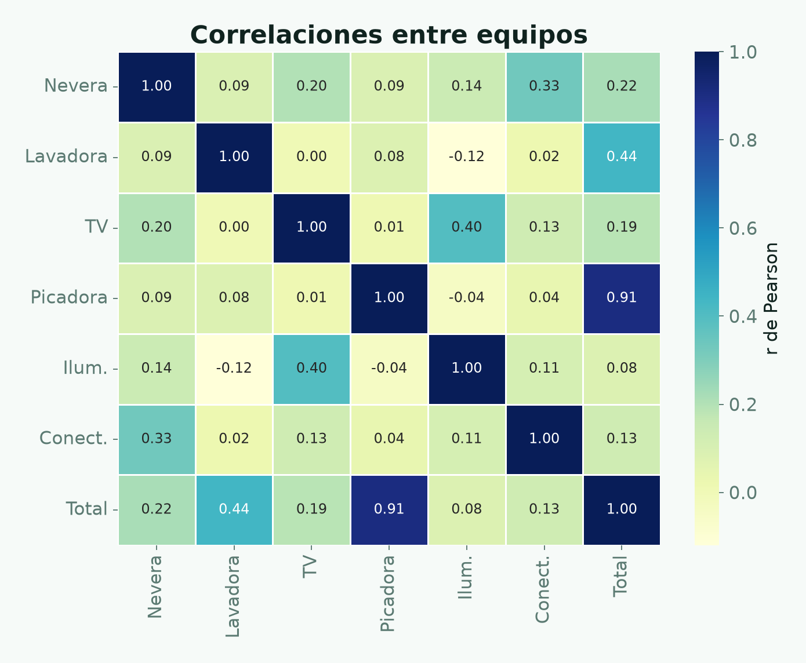
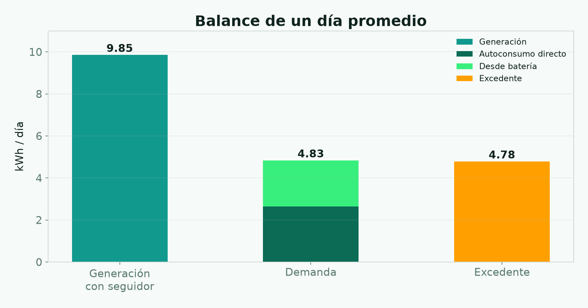
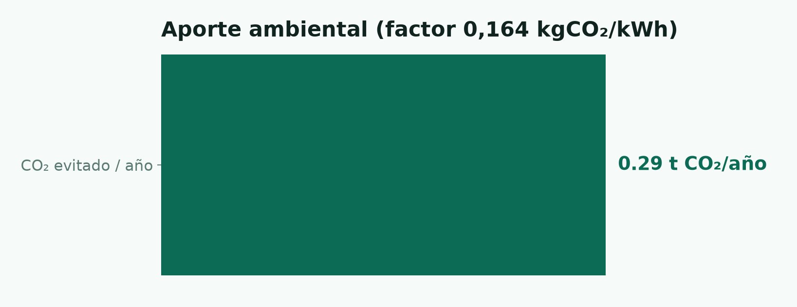
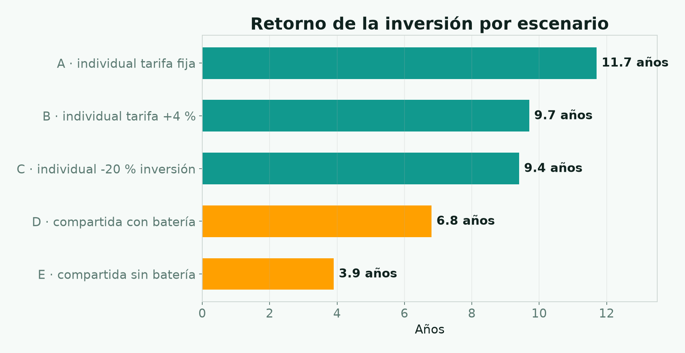

Del consumo medido a la energía compartida
El Tambo, Cauca · 1.000 mediciones horarias · una propuesta fotovoltaica con seguidor solar y batería compartida.
Use ← → para avanzar · Espacio para la siguiente · F para pantalla completa

Una finca rural que no sabía dónde se iba su energía
Periodo: 01/01/2025 00:00 → 11/02/2025 15:00 · frecuencia horaria, sin saltos · 0 nulos y 0 duplicados.
Cuatro pasos, una sola fuente de verdad

Un pico de demanda se define como una hora con potencia total mayor que la media + 2 desviaciones estándar.
El simulador usa la potencia media de cada equipo cuando está encendido y las horas observadas como punto de partida.
El pico llega cuando se apaga el sol

Dos equipos explican el 59,2 % del consumo


Una carga base estable, eventos muy intensos
Regla aplicada: pico = media + 2σ. La máxima puntual (2.541,9 W) es distinta del pico promedio horario (505 W).
Qué equipos se encienden juntos

Los hábitos vespertinos explican parte del pico; la correlación de la picadora con el total es parcialmente estructural porque el total es su suma.
Generar más de lo que se consume, y almacenar lo justo

HSP 4,5 · rendimiento global 0,78 · ganancia seguidor 27,5 % (supuestos declarados, a validar en sitio).
Un eje Este–Oeste con Arduino Uno
Esquema conceptual del código de referencia (seguidor_arduino.ino). No es una foto del prototipo.
divisores con 10 kΩ
pulso del actuador
período de revisión
captación estimada
El excedente convierte un problema en un proyecto compartido
La solución también se piensa por su ciclo de vida

5 kWh · 80 % DoD · BMS
sitios ventilados y protegidos
monocristalinos 4 × 550 W
ruta de reciclaje por definir
ACV simplificado y seguridad: RETIE, CREG 174 de 2021 y Ley 1715 de 2014. No sustituye un diseño eléctrico firmado.
Compartir la inversión cambia el horizonte

Cinco escenarios del informe técnico y de la idea de solución, con operación y mantenimiento incluidos.
El análisis también se publicó en la web
El código local incorporado al repo corresponde a la alternativa Gradio / Hugging Face Spaces, documentada por separado.
Lo que está listo y lo que sigue pendiente
De los datos a la acción energética
1.000 mediciones · 59,2 % de usos significativos · 9,85 kWh/día generados · 4,78 kWh/día compartibles.
github.com/bildermeneses-max/Proyecto_integrador
Datos reales · supuestos declarados · evidencia trazable